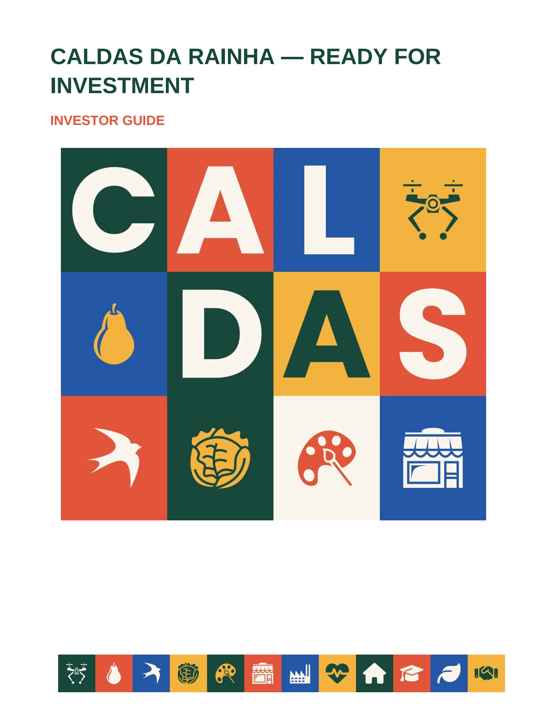

CALDAS DA RAINHA · INVESTIMENTO
Conhecer o território.
Encontrar possibilidades.
Uma cidade de indústria, criatividade e comércio. Explore os argumentos, os espaços e os caminhos de apoio ao investimento em Caldas da Rainha.
Explorar o Kit do InvestidorAcesso público · Sem conta ou palavra-passe
Public library · No sign-in required

Investor Guide · English editionUMA BIBLIOTECA, NOVE PUBLICAÇÕES
Da primeira leitura
ao próximo passo.
Folheie os documentos, pesquise um tema, amplie uma página ou descarregue o PDF. Pode partilhar uma publicação ou uma página específica.
Investor Guide
Uma primeira leitura das vantagens e do ecossistema do concelho.
02 · PT / ENO concelho e os apoios
Indicadores, contexto territorial e informação de apoio à decisão.
03 · PT / ENAtivos e espaços
Infraestruturas de acolhimento e localização empresarial.
04 · PT / ENFichas setoriais
Saúde, Defesa, Agro, Comércio e Serviços e Habitação.
05 · PTApresentação de investimento
Os principais argumentos para apresentar Caldas da Rainha.
06 · PT / ENAcolhimento ao investidor
O percurso de contacto, instalação e acompanhamento.
07 · ENInvestment pitch
The main reasons to invest, industrial areas and your softlanding journey.
08 · PTZonas industriais e PDM
Áreas atuais e propostas, com fontes e reservas de disponibilidade.
09 · ENIndustrial areas and PDM
Current and proposed planning areas, with sources and limitations.
ÁREA RESERVADA
Trabalha na equipa municipal?
O painel de trabalho e os registos privados de investidores continuam reservados aos utilizadores autorizados. Só esta área exige autenticação.